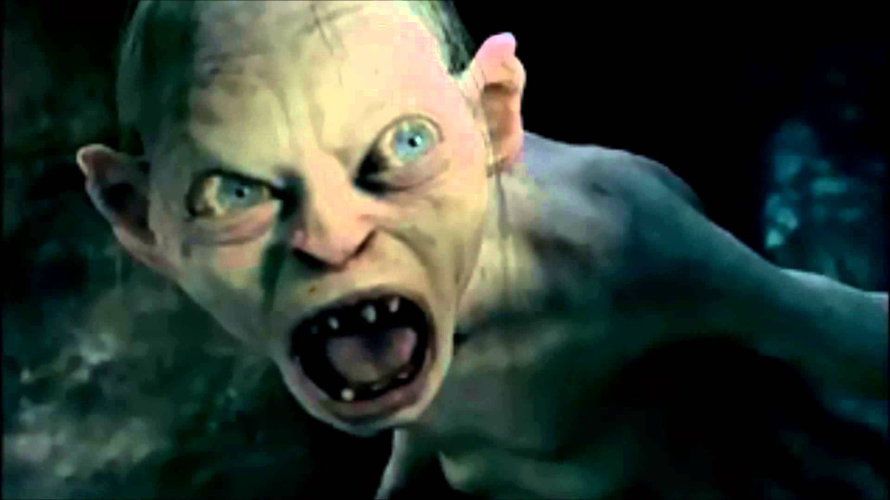

O Senhor dos Anéis (título original em inglês: The Lord of the Rings) é uma trilogia de livros de alta fantasia escrita pelo escritor britânico J. R. R. Tolkien. A saga começa como sequência de um livro anterior de Tolkien, O Hobbit, e logo se desenvolve numa história muito maior. Foi escrito entre 1937 e 1949, com muitas partes criadas durante a Segunda Guerra Mundial. Embora Tolkien tenha planejado realizá-lo em volume único, foi originalmente publicado em três volumes (The Fellowship of the Ring, The Two Towers e The Return of the King) entre 1954 e 1955, e foi assim, em três volumes, que se tornou popular. Desde então foi reimpresso várias vezes e foi traduzido para mais de 40 línguas, e vendeu mais 160 milhões de cópias, tornando-se um dos trabalhos mais populares da literatura do século XX.
Section 1

O primeiro volume, A Sociedade do Anel, publicado em 1954, contém um prólogo, no qual são dadas as características dos Hobbits.
O segundo volume, As Duas Torres, publicado alguns meses depois de A Sociedade do Anel, também em 1954, continua a história original com mais personagens.
A saga termina com a publicação em 1955 do terceiro volume, intitulado O Retorno do Rei
Section 2

O pano de fundo da história é revelado enquanto o livro progride, e elaborado também nos apêndices, no Silmarillion e em Contos Inacabados, os últimos publicados após a morte de Tolkien. Começa milhares de anos antes da ação no livro, com a ascensão do epônimo senhor dos anéis, senhor do escuro Sauron, possuidor de grandes poderes supernaturais, que governava o temido reino de Mordor. No fim da Primeira Era da Terra Média, Sauron sobreviveu à catastrófica derrota e o exílio de seu mestre, a figura fundamental do mal, Morgoth e durante a Segunda Era Sauron planejou ganhar o domínio sobre a Terra Média. Sob aparência de "Annatar" ou senhor dos presentes ajudou os elfos ferreiros de Eregion, e fomentou a forja dos anéis mágicos que conferenciaram vários poderes e habilidades aos seus portadores, mas Celebrimbor, líder dos elfos ferreiros (muito talentoso e neto de Fëanor que criara as Silmarils na Primeira Era), os tinha forjado independentemente de Sauron. Os mais importantes destes foram os dezenove anéis do poder ou os Grandes Anéis.
Section 3
Sauron forjou secretamente um Grande Anel para si próprio, O Anel, pois planeava escravizar os portadores dos outros anéis de poder. Este plano falhou em parte porque os elfos tomaram ciência dele e esconderam os seus anéis, os Três Anéis Élficos, dando-os aos Sábios de seu tempo (Galadriel, Círdan e Gil-Galad). Nesses, Sauron jamais tocou. Sauron lançou-se então à guerra, durante a qual capturou dezesseis dos anéis do poder e os distribuiu aos senhores e aos reis dos anões e dos homens. Estes anéis foram conhecidos como os sete e os nove respectivamente. Os Senhores Anões se provaram demasiado resistentes à escravização, embora seu desejo natural para a riqueza, especialmente ouro, aumentasse; isto trouxe muitos conflitos entre eles e outras raças.
Section 4
Dos sete Anéis que tinham sido dados aos Senhores Anões, Sauron recuperou os que não tinham sido destruídos, e dos nove Anéis presenteados aos Homens, Sauron trouxe todos para sua custódia. Esses humanos portadores dos Nove lentamente se corromperam e transformaram-se consequentemente nos morto-vivos, Nazgûl, os Espectros do Anel, os servos mais temidos de Sauron.